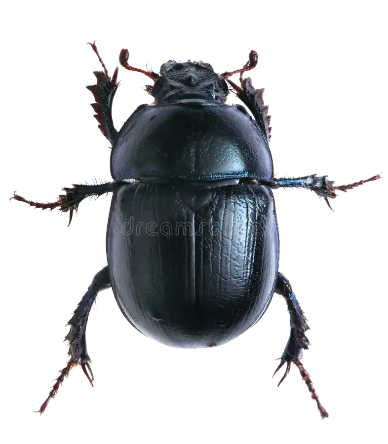

Meu primeiro post
Por: Luana Araújo
Os besouros pertencem à ordem Coleoptera, que é simplesmente o grupo mais diverso de todo o reino animal. Entre esse grupo podemos encontrar o besouro-do-esterco (também conhecido popularmente como rola-bosta) que é um inseto famoso por seu comportamento peculiar e sua enorme importância para o meio ambiente. Como o próprio nome diz, esse besouro se alimenta e se reproduz utilizando fezes de outros animais. Eles coletam o esterco, moldam-no em formato de pequenas bolas e as rolam por longas distâncias até suas galerias subterrâneas.